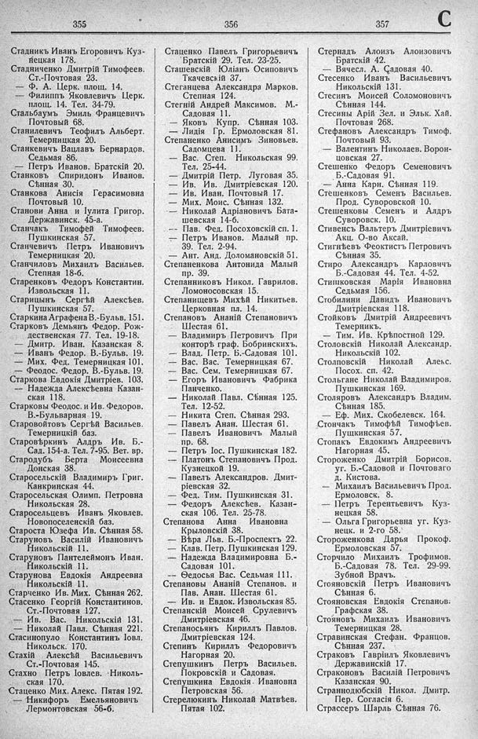

Лист источника 469
Скан

Распознанный текст
355
Стадникъ Иванъ Егоровичъ Куз-
нецкая 178.
Стадниченко Дмитрій Тимоѳеев.
Ст.-Почтовая 23.
— Ф. А. Церк. площ. 14.
— Филиппъ Яковлевичъ Церк.
площ. 14. Тел. 34-79.
Стальбаумъ Эмиль Францевичъ
Почтовый 68.
Станилевичъ Теофилъ Альберт.
Темерницкая 20.
Станкевичъ Вацлавъ Бернардов.
Седьмая 86.
— Петръ Иванов. Братскій 20.
Станковъ Спиридонъ Иванов.
Сѣнная 30.
Станкова Анисія Герасимовна
Почтовый 10.
Станови Анна и Іулита Григор.
Державинск. 45-а.
Станчакъ Тимофей Тимоѳеев.
Пушкинская 57.
Станчевичъ Петръ Ивановичъ
Темерницкая 20.
Станчиловъ Михаилъ Васильев.
Степная 18-б.
Старенковъ Федоръ Константин.
Извольская 11.
Старицынъ Сергѣй Алексѣев.
Пушкинская 57.
Старкина Аграфена В.-Бульв. 151.
Старковъ Демьянъ Федор. Рож-
дественская 77. Тел. 19-18.
— Дмитр. Иван. Казанская 8.
— Иванъ Федор. В.-Бульв. 19.
— Мих. Фед. Темерницкая 101.
— Феодос. Федор. В.-Бульв. 19.
Старкова Евдокія Дмитріев. 103.
-- Надежда Алексѣевна Казан-
ская 118.
Старковы Феодос. и Ив. Федоров.
В.-Бульварная 19.
Старовойтовъ Сергѣй Васильев.
Темерницкій баз.
Старовѣркинъ Алдръ Ив. Б.-
Сад. 154-а. Тел. 7-95. Вет. вр.
Стародубъ Берта Моисеевна
Донская 38.
Старосельскій Владимиръ Григ.
Канкринская 44.
Старосельская Олимп. Петровна
Никольская 28.
Старосельцевъ Иванъ Яковлев.
Новопоселенскій баз.
Староста Юзефа Ив. Сѣнная 58.
Старуновъ Василій Ивановичъ
Никольскій 11.
Старуновъ Пантелеймонъ Иван.
Никольскій 11.
Старунова Евдокія Андреевна
Никольскій 11.
Старченко Ив. Мих. Сѣнная 262.
Стасенко Георгій Константинов.
Ст.-Почтовая 127.
— Ив. Вас. Никольскій 131.
— Николай Павл. Сѣнная 221.
Стасинопуло Константинъ Іовл.
Никольск. 170.
Стахій Алексѣй Васильевичъ
Ст.-Почтовая 145.
Стахно Петръ Іовлев. Николь-
ская 170.
Стаценко Мих. Алекс. Пятая 192.
— Никифоръ Емельяновичъ
Лермонтовская 56-б.
356
Стаценко Павелъ Григорьевичъ
Братскій 29. Тел. 23-25.
Сташевскій Юліанъ Осиповичъ
Ткачевскій 37.
Стеганцева Александра Марков.
Степная 124.
Стегній Андрей Максимов. М.-
Садовая 11.
-- Яковъ Купр. Сѣнная 103.
— Лидія Гр. Ермоловская 81.
Степаненко Анисимъ Зиновьев.
Садомцева 11.
— Вас. Степ. Никольская 99.
Тел. 25-44.
— Дмитрій Петр. Луговая 35.
— Ив. Ив. Дмитріевская 120.
— Ив. Иван. Почтовый 17.
— Мих. Моис. Сѣнная 132.
— Николай Адріановичъ Бата-
шевская 14-б.
— Пав. Фед. Посоховскій сп. 1.
— Петръ Иванов. Малый пр.
39. Тел. 2-94.
— Ант. Анд. Доломановскій 51.
Степаненкова Антонида Малый
пр. 39.
Степанниковъ Никол. Гаврилов.
Ломоносовская 15.
Степанищевъ Михѣй Никитьев.
Церковная пл. 14.
Степановъ Ананій Степановичъ
Шестая 61.
— Владимиръ Петровичъ При
конторѣ граф. Бобринскихъ.
— Влад. Петр. Б.-Садовая 101.
— Вас. Вас. Темерницкая 67.
— Вас. Сем. Темерницкая 67.
— Егоръ Ивановичъ Фабрика
Панченко.
— Николай Павл. Сѣнная 125.
Тел. 12-52.
— Никита Степ. Сѣнная 293.
— Павелъ Анан. Шестая 61.
— Павелъ Ивановичъ Малый
пр. 68.
— Петръ Іос. Пушкинская 182.
— Платонъ Степановичъ Прод.
Кузнецкой 19.
— Павелъ Александров. Дмит-
ріевская 32.
— Фед. Тим. Пушкинская 31.
— Федоръ Алексѣев. Казан-
ская 106. Тел. 25-78.
Степанова Анна Ивановна
Крыловскій 38.
— Вѣра Льв. Б.-Проспектъ 22.
— Клав. Петр. Пушкинская 129.
— Надежда Владимировна Б.-
Садовая 101.
-- Ѳедосья Вас. Седьмая 111.
Степановы Ананій Степанов. и
Пав. Анан. Шестая 61.
— Ив. и Евдок. Извольская 85.
Степанскій Моисей Срулевичъ
Дмитріевская 46.
Степаносьянъ Кириллъ Павлов.
Дмитріевская 124.
Степинъ Кириллъ Федоровичъ
Нагорная 20.
Степушкинъ Петръ Васильев.
Покровскій и Садовая.
Степушкина Евдокія Ивановна
Петровская 56.
Стерелюхинъ Николай Матвѣев.
Пятая 102.
357
Стернадъ Алоизъ Алоизовичъ
Братскій 42.
— Вячесл. А. Садовая 40.
Стесенко Иванъ Васильевичъ
Никольскій 131.
Стесинъ Моисей Соломоновичъ
Сѣнная 144.
Стесины Арій Зел. и Эльк. Хай.
Почтовая 268.
Стефановъ Александръ Тимоф.
Почтовый 93.
— Валентинъ Николаев. Ворон-
цовская 27.
Стешенко Федоръ Семеновичъ
Б.-Садовая 91.
— Анна Карп. Сѣнная 119.
Стешенковъ Семенъ Васильев.
Прод. Суворовской 10.
Стешенковы Семенъ и Алдръ
Суворовск. 10.
Стивенсъ Вальтеръ Дмитріевичъ
Акц. О-во Аксай.
Стигнѣевъ Феоктистъ Петровичъ
Сѣнная 35.
Стиро Александръ Карловичъ
Б.-Садовая 44. Тел. 4-52.
Стишковская Марія Ивановна
Седьмая 156.
Стобилини Давидъ Ивановичъ
Дмитріевская 118.
Стойковъ Дмитрій Андреевичъ
Темерникъ.
— Тим. Ив. Крѣпостной 129.
Столовскій Николай Александр.
Никольскій 102.
Столповскій Николай Алекс.
Посох. сп. 42.
Стольгане Николай Владимиров.
Пушкинская 169.
Столяровъ Александръ Владим.
Сѣнная 185.
— Еф. Мих. Скобелевск. 164.
Стончакъ Тимоффѣй Тимофѣев.
Пушкинская 57.
Стопакъ Евдокимъ Андреевичъ
Нагорная 45.
Стороженко Дмитрій Борисов.
уг. Б.-Садовой и Почтоваго
д. Кистова.
— Михаилъ Васильевичъ Прод.
Ермоловск. 8.
— Петръ Терентьевичъ Куз-
нецкая 58.
— Ольга Григорьевна уг. Куз-
нецк. и 2-го 58.
Стороженкова Дарья Прокоф.
Ермоловская 57.
Сторчило Михаилъ Трофимов.
Б.-Садовая 78. Тел. 29-99.
Зубной Врачъ.
Стояновскій Петръ Ивановичъ
Сѣнная 6.
Стояновская Евдокія Степанов.
Графская 38.
Стояновъ Михаилъ Ивановичъ
Темерницкая 28.
Стравинская Стефан. Францов.
Сѣнная 237.
Страковъ Гавріилъ Яковлевичъ
Державинскій 17.
Страконовъ Василій Петровичъ
Казанская 90.
Страннолюбскій Никол. Дмитр.
Пер. Согласія 6.
Страссеръ Шарль Сѣнная 76.
C